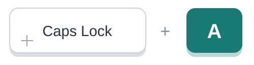
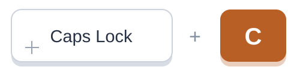
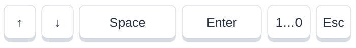

Lexift 1.0.1 · 使い方
Lexift クイックガイド
まずは3つのショートカットから。
Windows版をダウンロード Windows 10 / 11 · x64
韓日変換 ON / OFF

韓中変換 ON / OFF
初期設定のショートカットです。一般設定で変更できます。
01
初めて起動するとき
- ZIP全体を展開し、Lexift.exeを起動します。moduleフォルダーも同じ場所に置いてください。
- 表示言語を選び、使う入力方式をスロットに追加して変更を保存します。
- 日本語変換には韓国語IMEとMicrosoft日本語IMEが必要です。中国語変換は韓国語IMEと内蔵辞書を使います。
- 1スロットを追加して入力方式を登録します。
入力方式とモードを選び、変更を保存します。
02
入力方式を切り替える
03
ハングルの発音で日本語・中国語を入力
先に入力欄を韓国語IMEのハングルモード（가）にしてください。
ONにする → ハングルで発音を入力 → 候補を選ぶ
日本語
와타시→わたし→私
- 1入力した発音と読みを確認します。
- 2目的の候補を選びます。候補や順番は環境によって変わります。
- 3下のキーで確定します。
中国語
니하오→ni hao→你好
- 1入力した発音と読みを確認します。
- 2目的の候補を選びます。候補や順番は環境によって変わります。
- 3下のキーで確定します。

- ↑ ↓：候補を移動
- Space / Enter：選択中の候補を確定
- 1–9 / 0：番号で確定 · Esc：候補画面を閉じる
同じ変換ショートカットをもう一度押すとOFFになります。別の変換モードをONにすると、前のモードはOFFになります。
日本語の長音は「-」でも入力できます。例：코-죠- → こうじょう。韓国語文の意味を翻訳する機能ではありません。中国語の出力は簡体字です。
04
ショートカットを使いやすく
05
欲しい名前が候補にないとき
Lexift 1.0.1の実画面・説明用の設定例です。画像を押すと拡大できます。